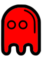
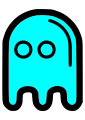
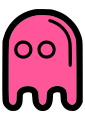

The Ghost Gang refers to the original antagonists of the first Pac-Man game, who return in most of the other games in the Pac-Man series. The group is comprised of four ghosts named Blinky, Pinky, Inky, and Clyde.

The red ghost is bad-tempered, crude, bossy, bully, fast, bratty, grouchy, dangerous, mean, sarcastic, greedy, and mostly aggressive. He's the responsible leader of the four and the arch-nemesis of Pac-Man.

The cyan or blue ghost who is goofy, shy, unpredictable, wacky, shattered-brained, a little reckless, dizzy, and can also sometimes chase Pac-Man aggressively like Blinky.

The pink ghost who is mischievous, persistent, tricky, cute, adorable, beautiful, happy, lovely, and has a big crush on Pac-Man from time to time. In the original arcade game, she's the only female ghost.
The orange ghost who is cowardly, lazy, stupid, brainless, hopeless, and seemingly dumb, but may just be smarter than he lets on and doesn't really care about chasing Pac-Man. He always distracts himself.